Vários depósitos e transferências
No Controle de Estoques do ERP da Olist, você consulta o saldo dos produtos no depósito escolhido e transfere quantidade de um depósito para outro. A consulta mostra estoque físico, estoque reservado e estoque disponível, com preço, custo médio, unidade e localização.
Você também pode abrir o saldo por empresa e por depósito a partir do cadastro do produto, em Consultar Estoque Multiempresa. Dá para filtrar a lista por depósito, tipo, categoria, tags, variações, fornecedor e busca por nome, código (SKU) ou GTIN/EAN.
Pré-requisitos
- A empresa já precisa ter depósitos cadastrados. Origem, destino e o filtro de depósito só listam depósitos existentes. Esta tela não cadastra depósito novo.
- A transferência entre depósitos só aparece quando há mais de um depósito cadastrado.
- Os produtos já precisam constar no Controle de Estoques para aparecer na lista e na busca da transferência.
- Para ver o saldo em outra empresa do grupo, o produto precisa estar mapeado nela.
Importante
- Na transferência, a quantidade não pode ser maior que o saldo do depósito de origem.
- A observação informada vale para todas as transferências daquele lançamento.
- Na consulta multiempresa, empresa sem o produto mapeado aparece como Produto não mapeado, sem linhas de depósito.
Instruções
Consultar saldos por depósito
-
Acesse Suprimentos > Controle de Estoques. A lista traz Produto, Código (SKU), Preço, Custo médio, Estoque físico, Estoque reservado, Estoque disponível, Unidade e Localização, com paginação e total de produtos.
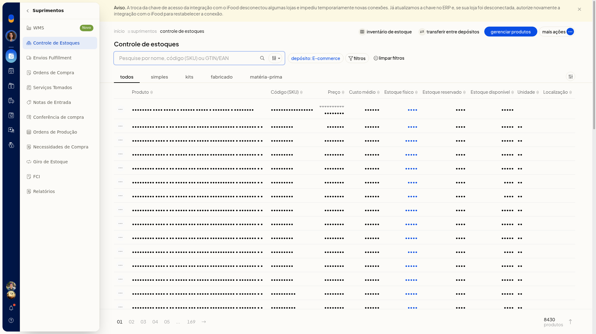
-
No menu ••• da linha, a opção exibida é Imprimir etiquetas.
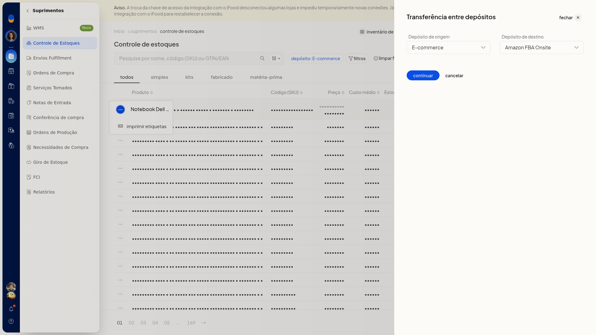
-
No filtro depósito, escolha o depósito da consulta ou Todos. O filtro só aparece quando a empresa tem mais de um depósito. O depósito ativo aparece no chip ao lado da busca.
-
Pesquise por nome, código (SKU) ou GTIN/EAN em Pesquise por nome, código (SKU) ou GTIN/EAN, se quiser.
-
Troque a aba todos, simples, kits, fabricado ou matéria-prima, se quiser.
-
Abra filtros para usar Categoria, Exibir estoque de todas as empresas do grupo, Tags de produtos, Variações e Fornecedor. Em Tags de produtos, a opção inicial é Todas. Em Variações, use Sem filtro por variações quando não quiser filtrar por variação.
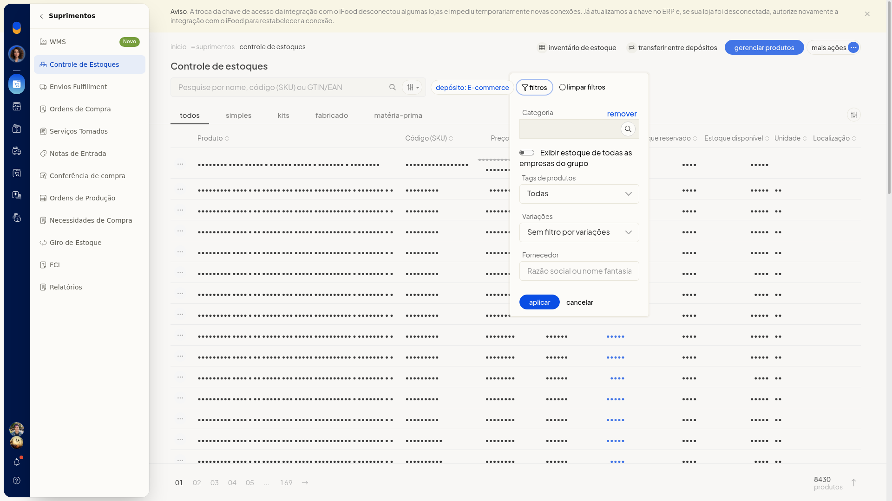
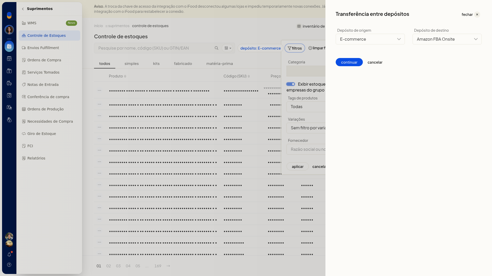
-
Clique em Aplicar para recarregar a lista. Cancelar fecha sem aplicar. Limpar filtros remove os filtros da lista.
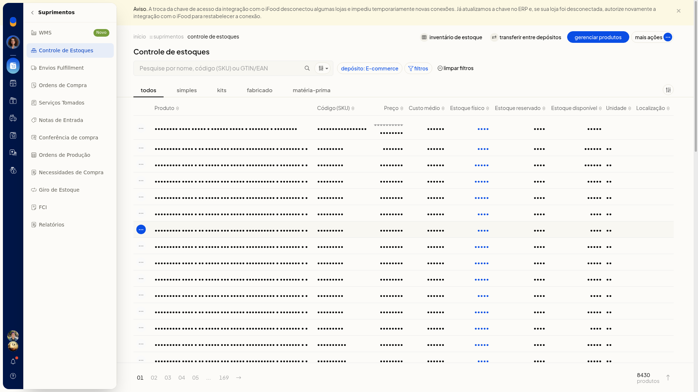
-
Clique no valor de Estoque físico para ver as empresas do grupo, os depósitos de cada empresa e o total por empresa.
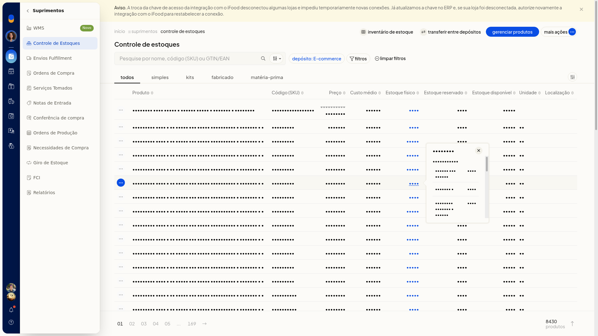
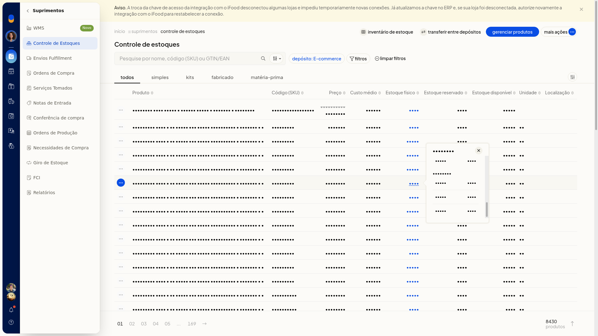
Transferir entre depósitos
-
Em Suprimentos > Controle de Estoques, clique em transferir entre depósitos. O mesmo comando está em Mais ações, junto de Inventário de estoque e Imprimir relatório.
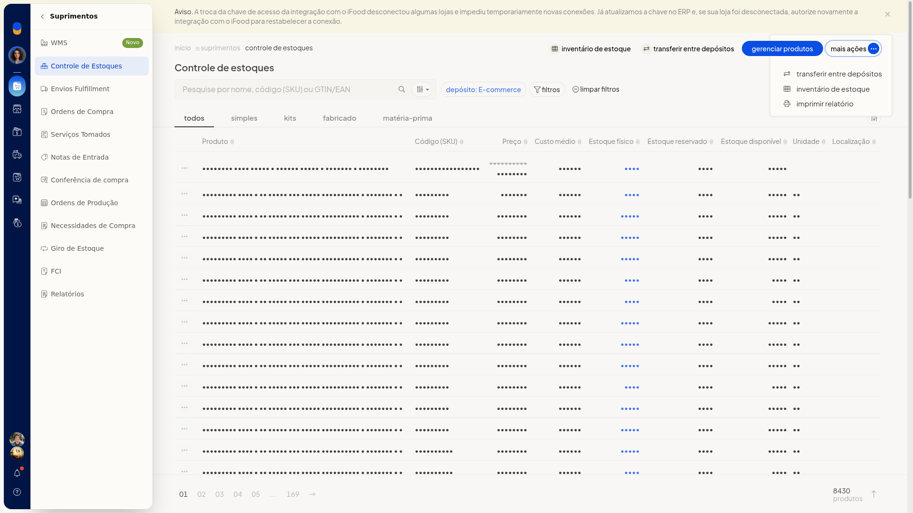
-
No painel Transferência entre depósitos, selecione Depósito de origem e Depósito de destino. Os dois usam a mesma lista de depósitos cadastrados.
-
Clique em Continuar. Cancelar ou o X fecham o painel nesta etapa.
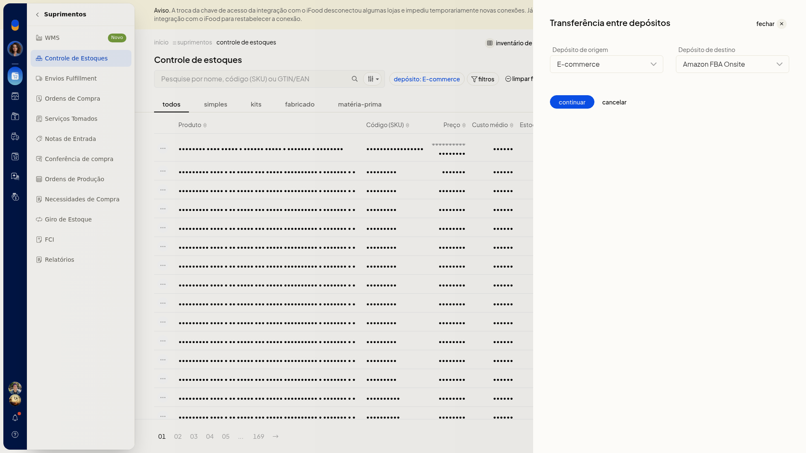
-
Na etapa de itens, confira origem e destino já preenchidos. Preencha Observação se quiser. O campo não é obrigatório, e o texto de ajuda informa que a observação será aplicada a todas as transferências.
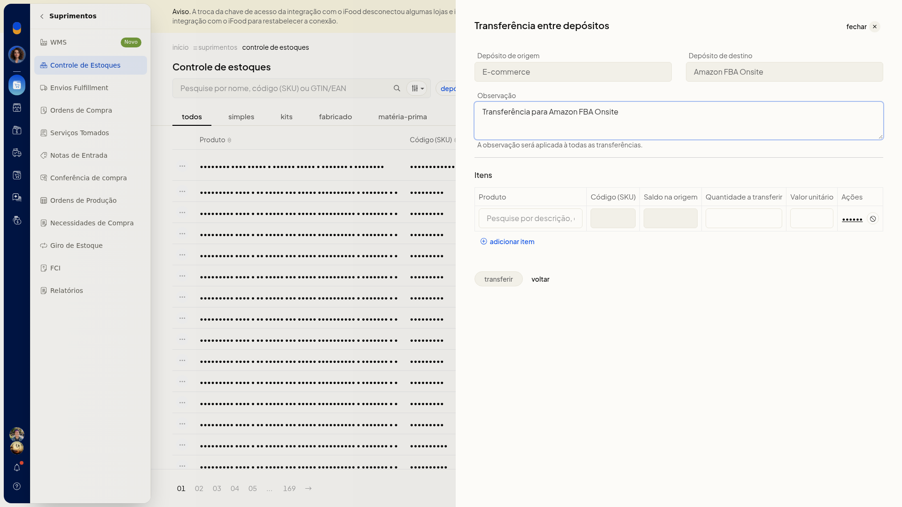
-
Pesquise o produto e escolha uma sugestão. A linha mostra Produto, Código (SKU), Saldo na origem, Quantidade a transferir e Valor unitário.
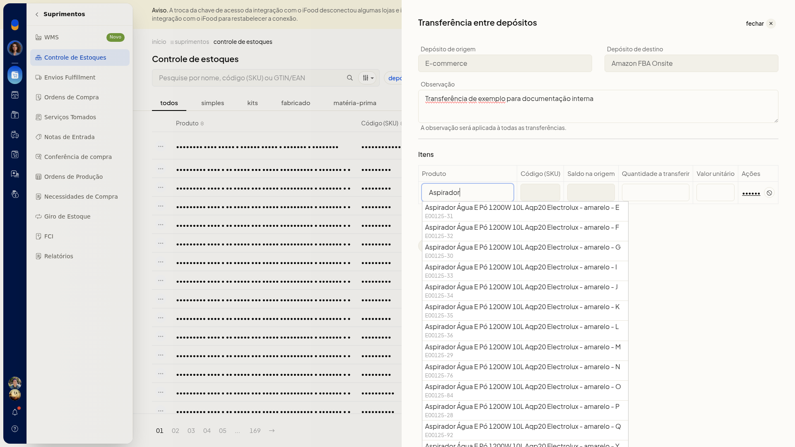
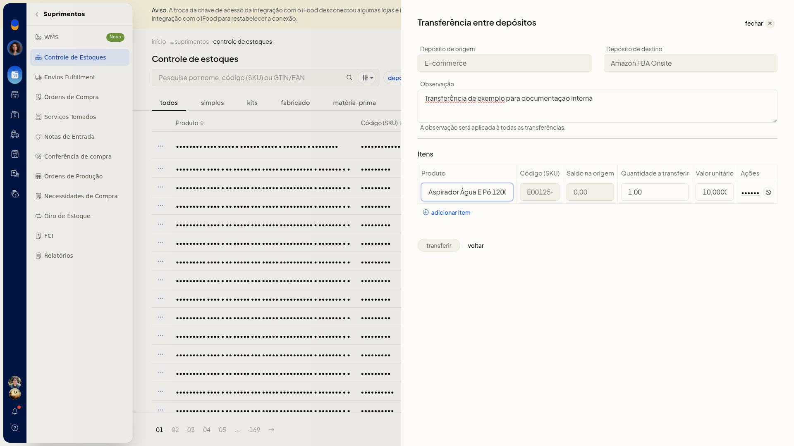
-
Ajuste Quantidade a transferir e Valor unitário. Informe os dois com vírgula decimal. A quantidade não pode ser maior que o saldo do depósito de origem.
-
Clique em adicionar item para incluir outros produtos.
-
Clique em Salvar ou em Transferir. São os comandos finais desta etapa. O lançamento reúne origem, destino, observação e itens.
Descartar a transferência sem gravar
-
Na etapa de itens, clique em Voltar.
-
No aviso Deseja retornar à tela anterior? Os dados não salvos serão perdidos, clique em Confirmar. O painel fecha e a lista volta, sem gravar a transferência.
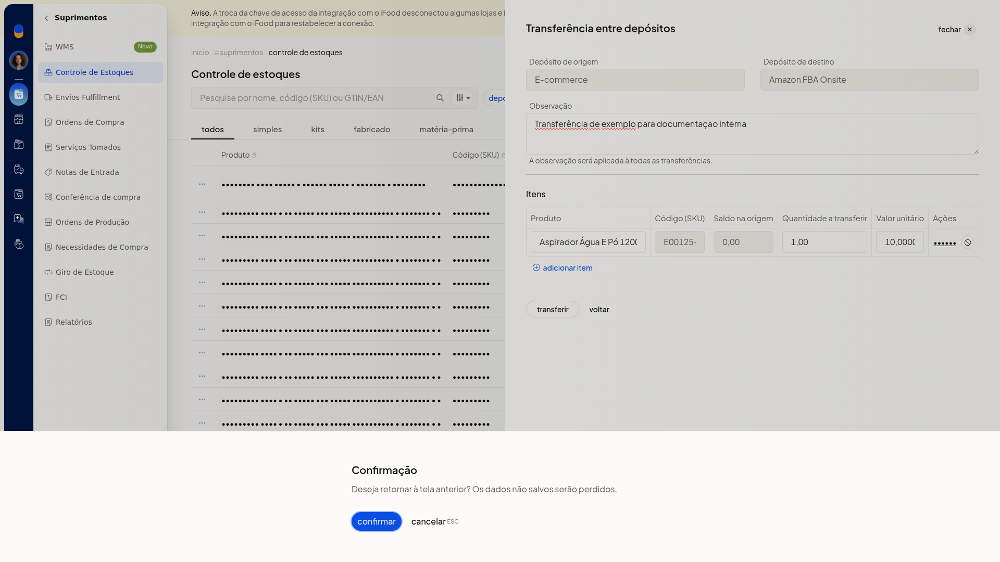
Consultar estoque multiempresa
-
Acesse Cadastros > Produtos.
-
Na linha do produto, abra o menu ••• e clique em Consultar Estoque Multiempresa. Esse comando não aparece no Mais ações da página.
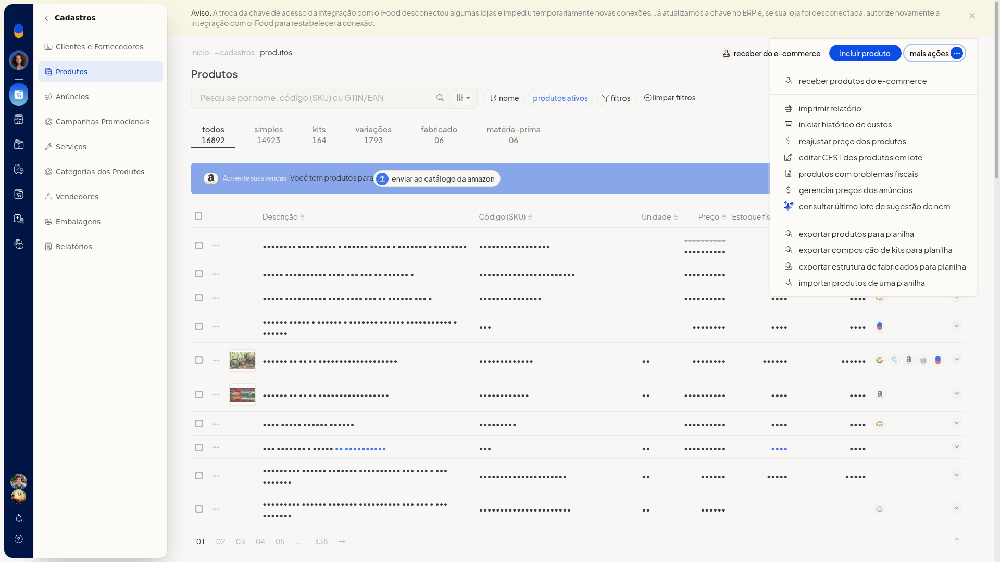
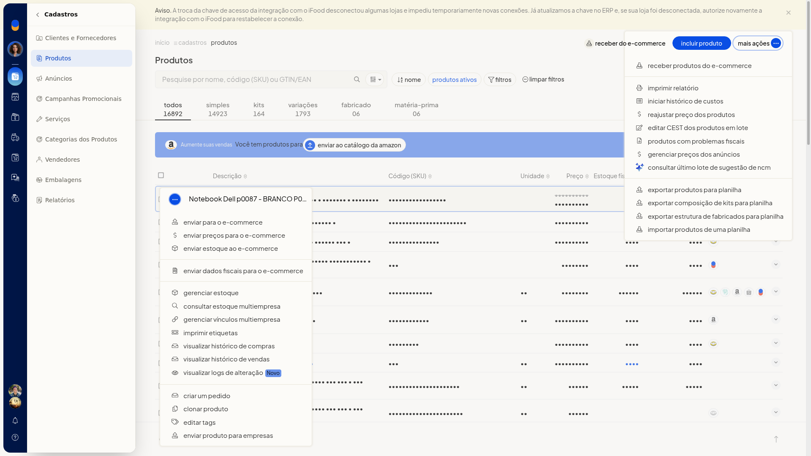
-
Confira Descrição, Código (SKU), Unidade, Preço, Estoque e Estoque Disponível.
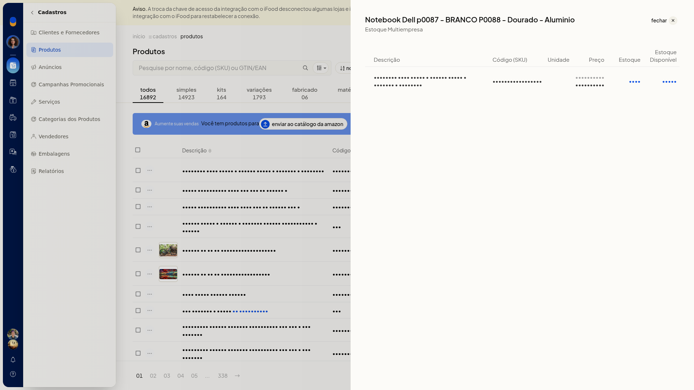
-
Clique no valor de Estoque para ver o agrupamento por empresa e, dentro dela, por depósito, com total por empresa. Empresa sem mapeamento mostra Produto não mapeado.
-
Clique no valor de Estoque Disponível para ver só o total de cada empresa, sem a quebra por depósito.
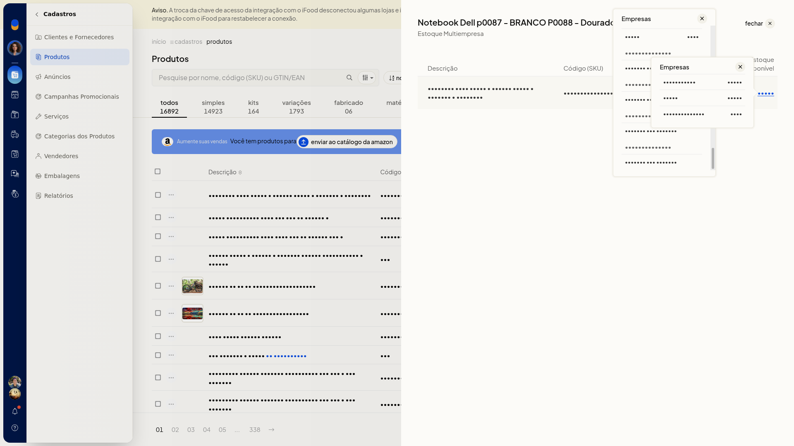
Resultado
Na grade, você vê os saldos do depósito escolhido. No detalhe do estoque físico, a composição por empresa e por depósito.
Na transferência, depois de Continuar, a etapa de itens mostra origem, destino, observação e a grade de produtos. Ao escolher o produto, a linha exibe saldo na origem, quantidade a transferir e valor unitário.
Em Consultar Estoque Multiempresa, você vê o estoque daquele produto nas empresas do grupo: detalhe por depósito em Estoque e total por empresa em Estoque Disponível.